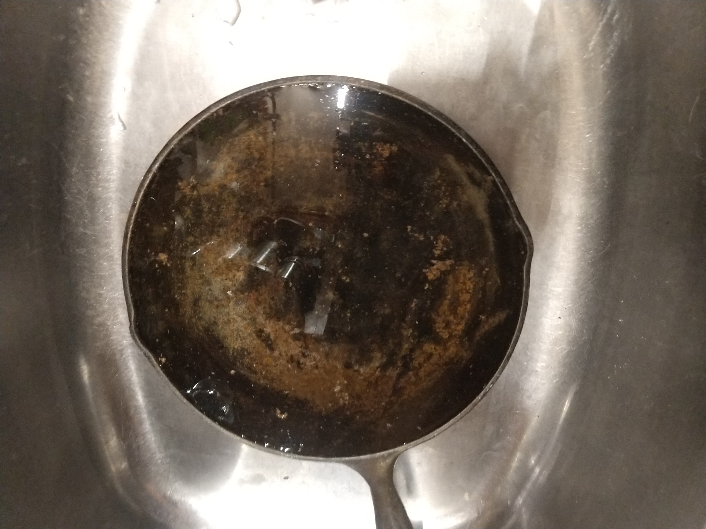
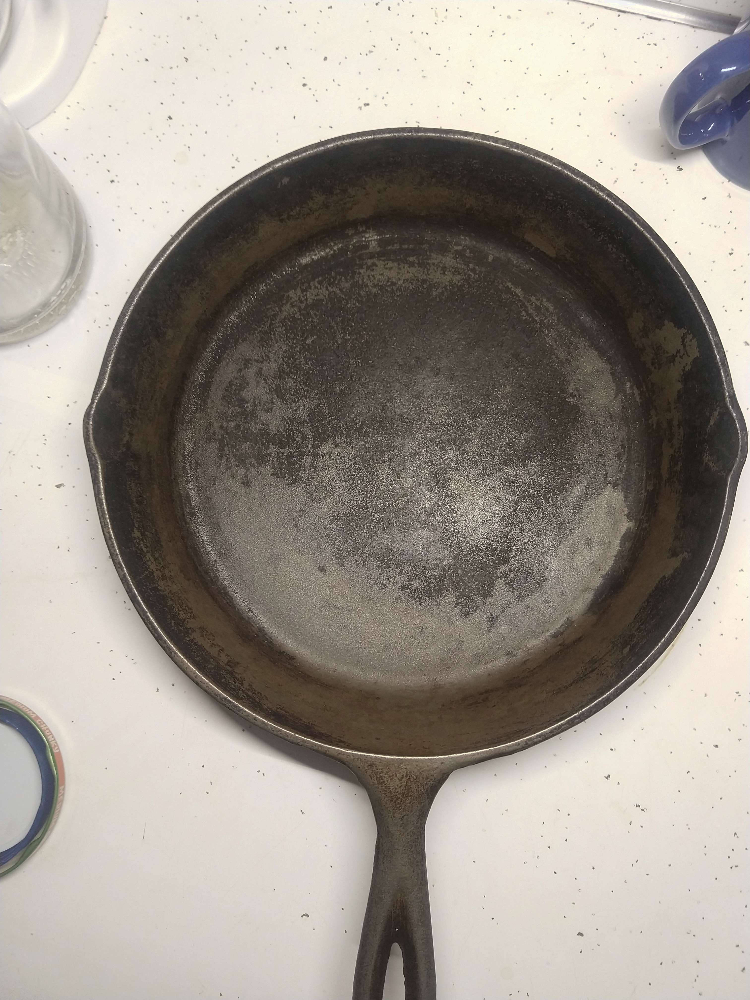

Happy New Year!
I wanted to kick off the new year with an article that I've been meaning to write for a long time now. Unfortunately I seem to have missed the holidays entirely, so this will be too late to give you any tips for entertaining over the holidays this year. Maybe you'll find this information useful for next year, or some time in between.
Several months ago, I went camping with some friends at one of the state parks in the area. I was in charge of coming up with meals for the trip, and in charge of cooking them. One of the tools that I've come to absolutely love for this purpose is a dutch oven. The real draw for me (at least at first) was that everything you could make in a crock pot could be brought to a dutch oven with very few modifications, if any.
I planned to make a mac-n-cheese and a chili while we were on the trip, and I planned to make the chili overnight in the embers of the camp fire. Both of these wound up going over very well, but there were a few issues.
For the trip, I had borrowed my parents' old enameled dutch oven, which isn't in super great shape, but wasn't something I was interested in damaging further, so I was pretty ginger with it. It never saw any direct flame. While I did put some embers on top, they were cooler embers, almost completely burned out, with a layer of sand between them and the raw enamel surface. I can (somewhat proudly) say that I didn't damage the enamel any further by doing this, though I won't lie, my hands were shaking pretty much the whole time I was doing it.
While I was using the dutch oven to make chili, I started researching what I should get for my own dutch oven that I could take camping. I ran across a lot of people saying the tool for the job (chili excluded, unfortunately) was bare cast iron. The enamel coating was a liability at high temperatures, after all.
I took the usual set of camping supplies on loan from my parents, and one of those supplies was a very small cast iron pan. The food it made was always top-notch, but cleaning it was a huge chore, so it only helped make a meal or two at most. At this point I was treating cast iron like a special-occasions-only tool, just because of the extra work it took to clean. However, one major upside to cast iron was that it could be exposed directly to the camp fire without any real risk of permanent damage.
...whoops.
A couple of months back, one of the friends who came with me on the trip got me a cast iron dutch oven as a birthday present. So, eager to try it out, I immediately made a chili in it! I cooked it overnight to steep the flavors really well, with my usual tomato base.
Anyone who knows cast iron will know why this was a mistake, but it turned out great, and the pot isn't damaged in the slightest from the encounter. Sure, the factory seasoning was slightly damaged from the acidity in the tomatoes, you could see the line where the chili had been, but it wasn't totally destroyed. I was really impressed with it, since my experience had been a sticky mess every time. This was easy to clean. Even so, it was clear the tomatoes had reacted with the seasoning, so following the instructions that came with the pot, I set out to season it afresh.
Manufacturer Lies, Community Wisdom
Don't follow the tag that comes with your cast iron, folks. This was mistake number 2. Again, to be clear, it still didn't actually make any difference in the end, but I learned a lot about how to care for cast iron this way.
The pot came out sticky, but very well coated. I figured this was normal at first, and so I just spread a thin layer of fresh oil on the surface of the freshly baked seasoning and kept going. Frankly, this worked just fine.
However, I quickly realized that that sticky texture isn't supposed to be there. Digging around on the internet, I found a lot of (often conflicting) information about the best way to season cast iron, but there are a few things that most people seem to agree on:
- Use a vegetable oil or grapeseed oil. Olive oil is OK, but not ideal for a variety of reasons.
- Coat the surface of the cookware with a very thin layer of oil, dry it off to be sure it's thin enough.
- Bake the cookware at the smoke point of the oil for about an hour, it's important you know what your oil needs.
- Let the cast iron cool very slowly to lessen the damage that might come from thermal stresses, this is about the only thing that can actually make cast iron go bad for good
- Do this for several coats, anywhere between 3-6. Use your judgment for when it's done.
- If the surface of the cast iron is sticky, either you didn't have the oven on high enough, or you applied too much oil.
- You can do this on the stove, but you'll need to be attentive 100% of the time, and you'll want to do it at a lower temperature than you feel is right. You can burn off the seasoning by accident this way.
- None of this matters 99% of the time, just keep using it until you run into a major problem and you're fine.
The manufacturer of my dutch oven basically boiled this down to 'spread vegetable oil over the iron, then bake it for an hour at 300 degrees F,' which is both oversimplified, and wrong.
If you want better advice from someone with more experience, check this article on America's Test Kitchen. It's titled What I Know About Cleaning and Seasoning Cast-Iron Skillets by Lisa McManus, in case the link goes dead at some point.
What It's Like to Use
I have to say, the reason I bothered learning any of this is because of how forgiving the dutch oven was. I screwed up pretty majorly when it came to care of the pot, but the chili I made with it was wonderful, it's still in good shape, and I've personally made many more really good meals with it since then. The surface is still almost as nonstick as Teflon, and it's just using some olive oil as a seasoning. I never fixed my mistake with the original coat of oil, either. It's still got a sticky surface in some places, and that just doesn't matter.
Because cast iron holds heat very well, and because it's thick, you can get things cooked well at an overall lower temperature, and the food stays hot for longer once the stove is turned off.
I was already used to non-stick cookware, and the rules are similar, but slightly different. Cast iron works great with metal utensils, you're not going to damage it or make it badly sticky just by using a fork on it or a metal turner. Just like with nonstick, you want to avoid anything that's too acidic, since it can break down the seasoning. Also just like nonstick, you want to add just a little oil to begin with. You can use both cast iron and nonstick pots and pans without any oil if you're feeling brave, neither should be a significant chore to clean, but your pan will last longer in the case of nonstick, and your seasoning will last longer with cast iron. Cast iron isn't as slippery as nonstick. You'll occasionally see some stuff stick to it, but on the whole it shouldn't be that much harder to clean, if at all.
A lot of people will tell you not to use any soap at all on cast iron, but you're not really running any risk of damaging anything if you do it occasionally, so long as you aren't using too much. I've heard rumors that the advice to avoid soap is from a pre-detergent era. Older soaps could actually damage cookware, but newer ones are much gentler and should be fine for the most part.
Bottom line though is not to worry about it. You won't destroy a cast iron pan unless you thermal shock it pretty hard, the worst you're likely to get by ignoring all of what people tell you to do is a sticky pan and maybe a metallic taste in some of your food. If you get the taste, don't worry, so long as you aren't eating your pan, it's non-toxic. That's another advantage over nonstick. Restoring a neglected or damaged pan is really, really easy. I managed to not screw it up too badly (if at all) my first try, in fact, while I've done better in some cases than others, I've done a lot of successful restorations by now.
My Journey to Restore My Parents' Pans
I decided to dig out my parents' old pans. None of them had been used in a very long time, with the exception of the one in the camping supplies. Except for that pan, they were all rusty.
Turns out that this isn't really a problem, not even rust destroys these things. I found a (quite tiny, #3) pan that was rusty. A quick cleaning and seasoning later, and it's been working great for frying sandwich-size eggs, or frying an egg into a kaiser roll or an English muffin.
The first one from the camping supplies, as it turns out, just had a lot of carbon buildup. I scrubbed it all off and then gave it a single coat of fresh seasoning in the oven, and it's as good as new now.
A little bit later, my mom found another pan in the camping supplies, and this one I documented. It was the worst one I had seen, by far. Here's what it looks like now:

I did just apply a few fresh coats of seasoning, so that's fresh out of the oven.
When it came out of the camping supplies, however, it looked much, much worse. I forgot to grab a shot of it dry before I started soaking it in vinegar and water to remove the rust, but here's a picture with the vinegar and water already in place:

And once I had removed the rust:

Now back to the present day:
In this case, I opted to start with 4 coats of seasoning at first, but in the past few weeks I've been noticing that some things, like vegetables, have started to stick a little bit, so I just gave it another 3 coats. It was just fine for the 4 months in between, however, and that's from halfway to stripped bare. When I said you can't really ruin these things, I meant it. Beyond just being damaged, this one was also pretty old. I asked my mom how long she's had that pan, and for all she knows it's older than she is. We have no idea who originally bought this one.
Should You Use Cast Iron?
Yes! I'm surprised I hadn't looked into this sooner, but my negative experiences with cast iron in the past were all from improper care and neglect compounding together. Some of the best food I've ever made has been in cast iron, including the best burgers I've ever made. That was over a 3-stone open flame in a fire bowl in the back yard when I was in high school, and while the pan wasn't really properly seasoned then, either, those burgers really were excellent, and if I can ever make them again, I'll definitely post about it.
Cast iron is quite low maintenance, it's non-stick, it's sturdy, and it holds its temperature, leading to less temperature swings on an electric stove. It's also compatible with induction burners, as a bonus. It's not expensive, either. If you look for a pan from Lodge, for example, you're unlikely to need more than $50 for some of the biggest pans. All of my family's cast iron is Lodge at the moment, and all of it performs great. Most of it is older, but the newer stuff is cost competitive with aluminum nonstick, I checked. When you factor in the fact that nonstick pans usually only last 2-5 years, even if you're only concerned about cost, cast iron makes sense.
I'm going to go make a pizza now, I'll paste in a picture before I post. That pan looks nice, but it's missing the food!